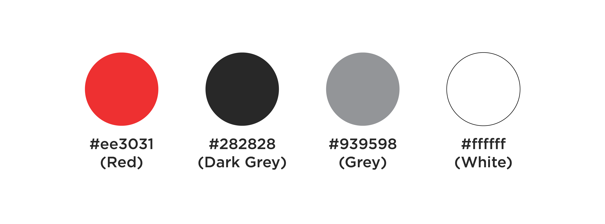

UGA Hacks
We wanted to bring the maker mentality to UGA, so we started UGA Hacks. Technology hasn’t been a big part of UGA culture. However, there are those taking initiative in Athens, like FourAthens, ACM, IEEE, and other organizations. To support this growth, we wanted to start an annually occurring hackathon here, UGA Hacks.
A CALL OUT TO THE PASSIONATE HACKER
The UGA Hacks brand is centered around a comet, a burning force that makes an explosive impact. We not only want this to represent our attitude, but the attitude of our hackers as well. With this brand, we want to attract hackers that share our mission. 
ROADBLOCKS: A PROCESS TO OUR MARK
My original concept was fire (following the same theme), the logo mark being a flame. After much critique and review, I realized that this wasn’t the direction I wanted to go, so I ended up scrapping this and starting anew. This also closely resembled another company's logo, which was a deal breaker.
The idea here was to go away from the sharp edges and more towards solid, geometric shapes (enforcing the technology theme). This new mark consists of the main hexagon shape, the supporting dashes, and finally, the center connected node.
(new logo mark appropriately titled: Node)

REPRESENTING THE DAWGS
To associate with UGA, I pulled our color palette from our university: red, black, and white, with a few liberties taken. Deciding on our colors was the final knot, pulling the Node together.WHAT COMES AFTER A COMET?
The UGA Hacks brand is split into 2 different components: Node, and the aftermath. A comet leaves behind ash and spreading wildfire, which was integrated into the brand and front-end. After our hackathon, after our impact, we wanted to spread our maker influence throughout our campus, and sure enough, we did.
>Applications: 469
>Attendees: 180
>Projects completed: 36
We are proud to say that the inaugural UGA Hacks was a great success, especially for 3 months of high-paced planning. It was a stressful, but amazing experience organizing this hackathon.
We are still deciding on the direction we are going to take with our next one, but we guarantee that UGA Hacks is coming back.